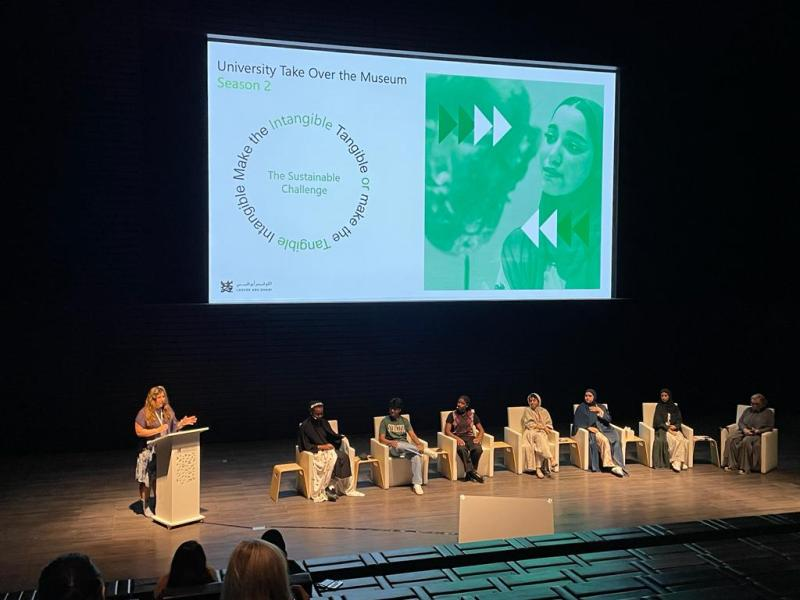
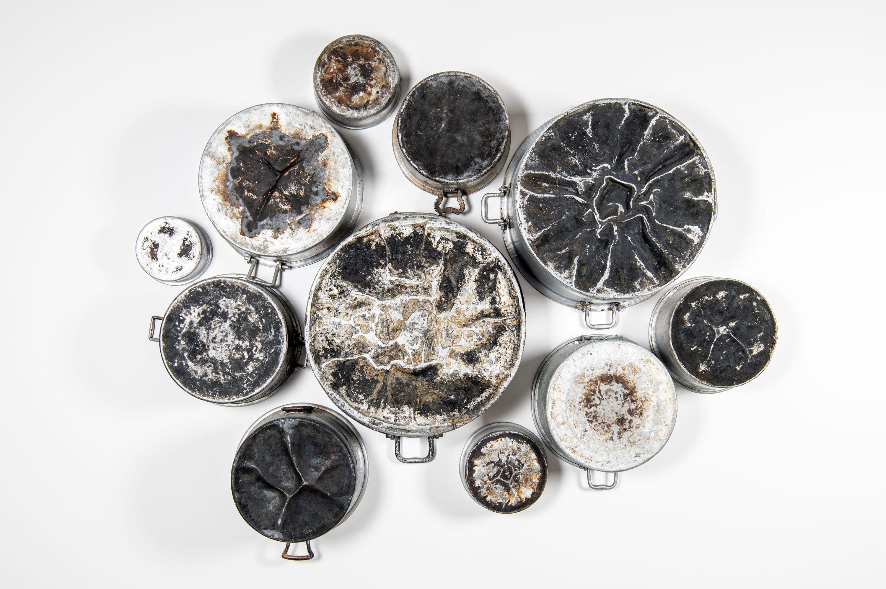
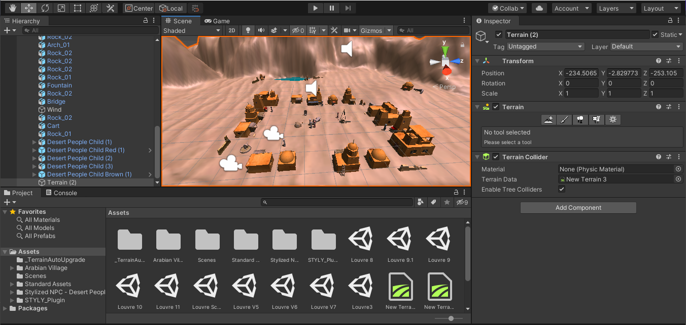
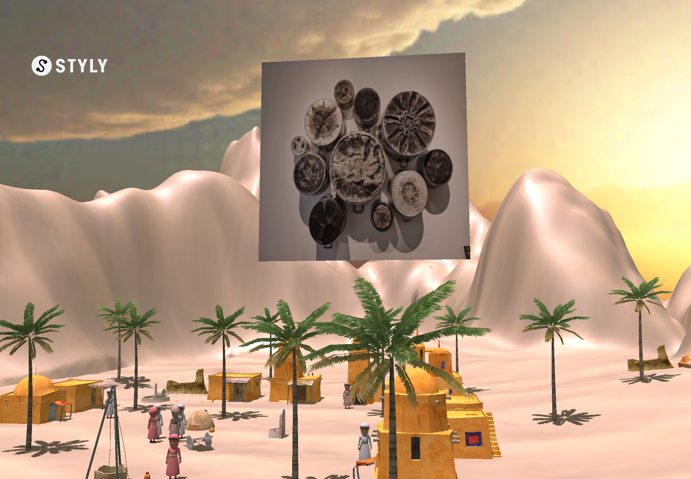

Culinary Chronicles
Overview: A virtual reality installation of a Saudi Arabian village, bringing to life the unseen history of artist Maha Malluh’s artwork, “Food for Thought”.
Background
Developed as part of the Louvre Abu Dhabi’s program “University Take Over the Museum”, where groups of university students showcase different installations based on art pieces within the museum. The theme of that year was one of sustainability: ‘Make the Intangible Tangible or the Tangible Intangible’.
Working in a team with 2 other students, we decided to use an artifact from the museum, and try to bring its history (the intangible) to life using virtual reality (tangible).
Ideation
I suggested we focus on Maha Malluh’s artwork “Food for Thought”, a collection of used Saudi Arabian pots, which reference food as a way to bring family and friends together under this shared cultural tradition. We decided to create a traditional Saudi Arabian village in Unity using existing assets, to bring to life the environment in which the pots would have been used.
Developing the Environment
We then slowly compiled the assets into Unity to create the final environment.
VR Headsets
I worked on exporting the project to an extended reality program, Styly. In this format the scene could be seen in reference to the real world via VR headsets, walked around and explored in real time.


Exhibition Day
Together we set up the final exhibit at the Louvre Abu Dhabi where we shared the headsets with the museum’s guests and they were able to walk around and interact with the environment in real time.